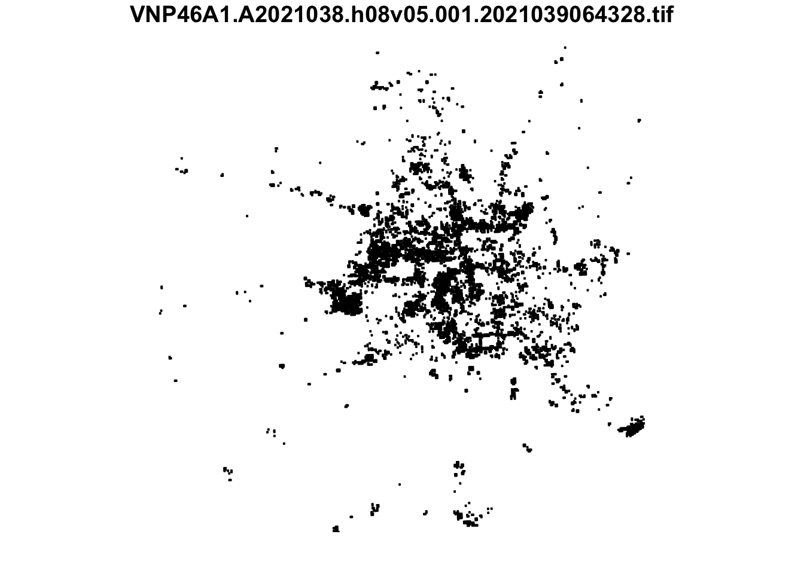
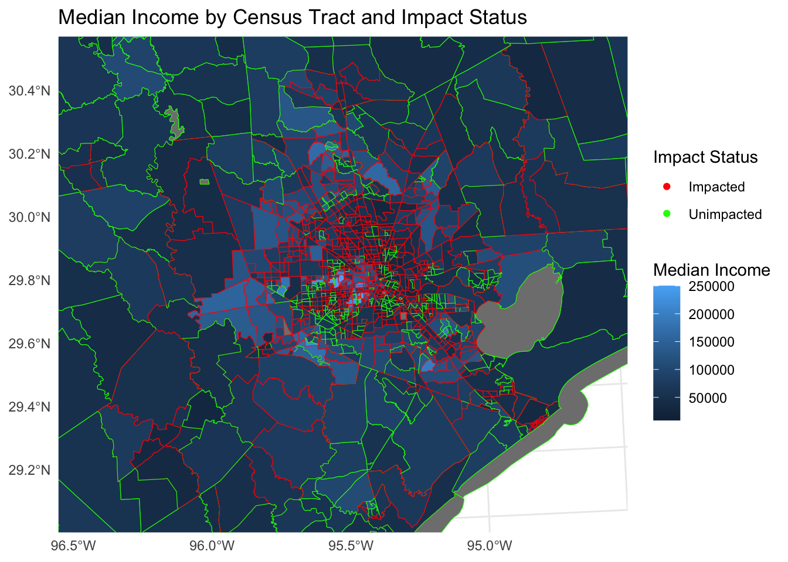
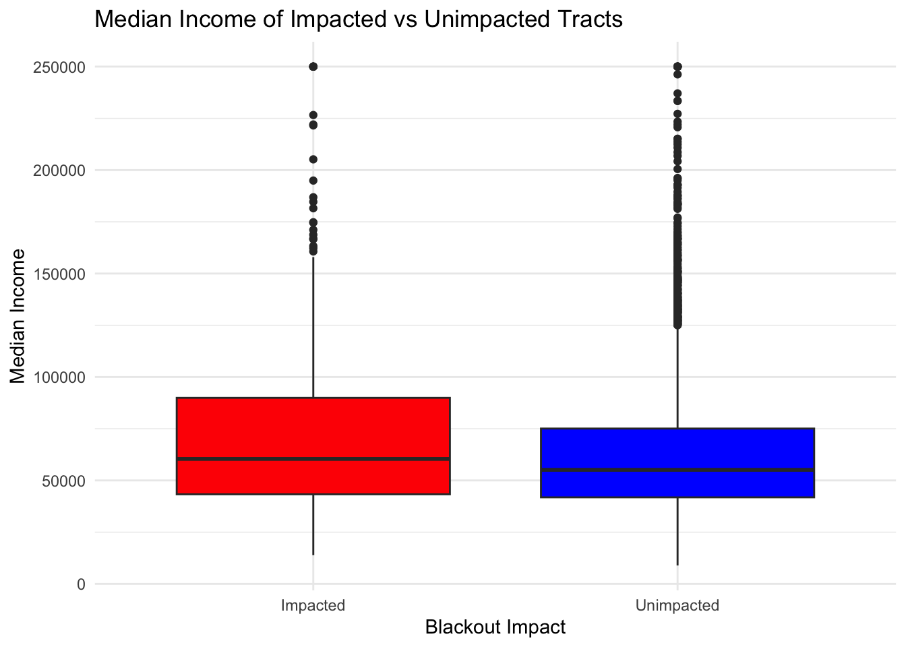

# import libraries
library(dplyr)
library(abind)
library(sf)
library(terra)
library(spData)
library(spDataLarge)
library(tidyverse)
library(dplyr)
library(stars)
library(here)
# clear environment for sanity
rm(list = ls())Introduction
In the heart of winter, the greater Houston region found itself plunged into darkness. The February 2021 blackout, a consequence of severe winter storms, left a metropolis in a precarious state, exposing the vulnerabilities in urban power grids. This blog post aims to dissect the Houston blackout, employing geospatial analysis to estimate the number of homes affected and explore the socio-economic factors influencing community resilience during power outages. This intricate analysis is not just a tale of a city in darkness but a lens into the fragility of our urban lifelines.
Background
The February 2021 blackout in Houston transcends being a singular, isolated power outage, instead unfolding as a critical incident that checked the robustness of urban infrastructures against extreme weather conditions. This event provides a unique opportunity to analyze the resilience of a major metropolitan area’s energy grid and its capacity to withstand unforeseen natural disasters. This particular incident in Houston, a city known for its dynamic growth and complex urban layout, becomes a focal point for examining urban resilience in the face of environmental challenges. The blackout serves as a view into understanding the repercussions of such events on a city’s operational continuity and the well-being of its residents. Houston is a good example for examining the intersection of urban infrastructure with environmental circumstances, offering insights into the areas where improvements are needed to enhance city-wide resilience. The significance of this analysis lies in its potential to influence future urban planning and emergency response strategies. By investigating the impacts of the Houston blackout, valuable lessons can be learned about the importance of designing cities that are not only efficient under normal conditions but also resilient and adaptable in the face of climate challenges. This blackout demonstrates the necessity of anticipating and preparing for extreme scenarios, ensuring that cities are not just places of progress and development, but also places of safety and stability for all civilians.
Data and Methodology
The analysis hinges on three key data sources: night light data (NASA 2023), OpenStreetMap data detailing roads and buildings (OpenStreetMaps 2023), and American Community Survey (ACS) socio-economic data. OpenStreetMap and the Landsat data from NASA are regularly-updated databases that are available to the public. I employed R, utilizing libraries such as stars, sf, and terra, to manipulate and analyze these datasets. The methodology involved a step-by-step approach, beginning with the aggregation of night light intensity data to assess blackout areas. I then integrated this with road and building data to estimate the number of homes affected and concluded with an examination of socio-economic factors, offering insights into the recovery dynamics of different communities.
Research Question: How did economic status influence the susceptibility and resilience of communities in Houston in the 2021 winter blackouts?
Let’s get to coding.
Starting off by loading in the necessary libraries.
Next, importing data. The first set of data is the night light data, made up of tiles, or images, that capture the light intensity emanating from the surface of the planet during nighttime. The data is stored as rasters, and the stars package is used for raster handling.
# read in night lights tiles
feb7_h08v05 <- read_stars(here::here("blog", "2023-12-2-geo-proj", "data", "VNP46A1", "VNP46A1.A2021038.h08v05.001.2021039064328.tif"))
feb7_h0806 <- read_stars(here::here("blog", "2023-12-2-geo-proj", "data", "VNP46A1", "VNP46A1.A2021038.h08v06.001.2021039064329.tif"))
feb16_h0805 <- read_stars(here::here("blog", "2023-12-2-geo-proj", "data", "VNP46A1", "VNP46A1.A2021047.h08v05.001.2021048091106.tif"))
feb16_h0806 <- read_stars(here::here("blog", "2023-12-2-geo-proj", "data", "VNP46A1", "VNP46A1.A2021047.h08v06.001.2021048091105.tif"))Next, we want to combine the tiles that have the same date and create two objects. We can utilize the st_mosaic() function to combine the tiles.
# combine tiles for each date to create 2 objects
feb7 <- st_mosaic(feb7_h08v05, feb7_h0806)
feb16 <- st_mosaic(feb16_h0805, feb16_h0806)Great. The next step involves creating a blackout mask to identify areas in Houston that lost power during the winter storms. This is done by calculating the change in light intensity, reclassifying this light internsity difference raster, and then converting the raster to a stars object.
Now, we want to convert the blackout stars to a vector format and fix any invalid geometries using st_make_valid(). Let’s visualize the blackout in vector format to check where we are at.
# calculate the change in lights intensity from Feb 7 to Feb 16
diff <- feb7 - feb16
# reclassify difference raster so it is maleable
diff <- rast(diff)
rmask <- diff
# reclassify difference raster assuming a 200 nW shift was due to the blackout
rmask[rmask <= 200] = NA
# convert back to a stars object
blackout_stars <- st_as_stars(rmask)
# convert blackout to vector format and fix invalid geometries, set CRS
blackout_sf_valid_trans <- st_as_sf(blackout_stars, as_points = FALSE) %>%
st_make_valid() %>%
st_transform(crs = 3083)The next piece of analysis involves defining the Houston metropolitan area and cropping the blackout mask to this area of interest. It is imperative that the coordinate reference systems align of these two spatial objects!
# define Houston metropolitan coordinates
houston_coords <- matrix(c(-96.5, 29, -96.5, 30.5, -94.5, 30.5, -94.5, 29, -96.5, 29), ncol = 2, byrow = TRUE)
# create Houston polygon outline
houston_poly <- st_polygon(list(houston_coords))
# convert to sf and initially assign CRS EPSG:4326
houston <- st_sfc(houston_poly, crs = st_crs("EPSG:4326"))
# transform the Houston polygon to EPSG:3083
houston <- st_transform(houston, crs = "EPSG:3083")
# crop the blackout to the Houston metropolitan region
cropped_blackout_proj <- st_intersection(blackout_sf_valid_trans, houston)
# assign EPSG:3083 CRS to assure consistent CRS
cropped_blackout_proj <- st_transform(cropped_blackout_proj, crs = "EPSG:3083")
plot(cropped_blackout_proj,
colorbar = FALSE,
main = "Locations of Significant Light Intensity Change in Houston")
This is a visual of the Houston metropolitan area light intensity from before and after the storm. The census tracts that lie in the places where the black dots show up are areas that have been impacted by the blackout.
Next, we will refine the blackout analysis by excluding areas near highways. This helps in ensuring that the blackout mask we created earlier accurately reflects residential or non-highway areas that lost power, rather than areas simply experiencing less traffic during the storms.
# define SQL query
query <- "SELECT * FROM gis_osm_roads_free_1 WHERE fclass='motorway'"
# load highway data
highways <- st_read("data/gis_osm_roads_free_1.gpkg", query = query, quiet = TRUE)
# reproject highway to EPSG:3083
highway_proj <- st_transform(highways, crs = 3083)
# identify areas within 200m of all highways, dissolve buffer, and convert to sf
buffer <- highway_proj %>%
st_buffer(200) %>%
st_union() %>%
st_as_sf()
# exclude areas close to highways from blackout
blackout <- st_difference(cropped_blackout_proj, buffer)Finding Impacted Homes
Next, we will look to find the number of homes that have been impacted by the blackouts. A buildings dataset will be loaded in and filtered for residential buildings. Then, we will filter for the homes that are in the blackout area and display this value.
# define SQL query
query_buildings <- "
SELECT *
FROM gis_osm_buildings_a_free_1
WHERE (type IS NULL AND name IS NULL)
OR type in ('residential', 'apartments', 'house', 'static_caravan', 'detached')
"
# load buildings dataset using st_read and apply the query, reproject CRS
buildings_proj <- st_read("data/gis_osm_buildings_a_free_1.gpkg", query = query_buildings, quiet = TRUE) %>%
st_transform(crs = 'EPSG:3083')
# filter for homes within blackout areas by filtering
impacted_homes <- buildings_proj[blackout, , op = st_intersects]
# count the number of impacted homes
num_impacted_homes <- nrow(impacted_homes)
# show the number of impacted homes
print(paste("Number of impacted homes:", num_impacted_homes))[1] "Number of impacted homes: 157411"As the results show, a grand total of 157,411 residential buildings were impacted by the blackouts. This total quantifies the extreme impact of the storms and highlights how many individuals and families faced the consequences of prolonged blackouts.
Investigating Socioeconomic Factors
Up next, we want to consider potential disproportionate socioeconomic outcomes, particularly the average income per household in each census tract in the Houston metropolitan area. We will read in a new dataset and pull the income layer from it, and filter for homes in the blackout region using a spatial join of the census tract data and buildings data with the st_join() function.
# geodatabase file path
gdp_path <- 'blog/2023-12-2-geo-proj/data/ACS_2019_5YR_TRACT_48_TEXAS.gdb'
# load the geometries from the ACS data
acs_geom_raw <- st_read(here::here(gdp_path), layer = "ACS_2019_5YR_TRACT_48_TEXAS", quiet = TRUE)
# transform CRS to EPSG:3083
acs_geom <- st_transform(acs_geom_raw, crs = 3083)
# load the ACS income data
acs_income <- st_read(here::here(gdp_path), layer = "X19_INCOME", quiet = TRUE)
# select the median income column
acs_income_selected <- acs_income[, c("GEOID", "B19013e1")]
# trim the GEOID in acs_income_selected to keep the last 11 characters
acs_income_selected$GEOID <- substr(acs_income_selected$GEOID, nchar(acs_income_selected$GEOID) - 10, nchar(acs_income_selected$GEOID))
# ensure that GEOID columns are of the same data type
# convert GEOID to character if they are not
acs_income_selected$GEOID <- as.character(acs_income_selected$GEOID)
acs_geom$GEOID <- as.character(acs_geom$GEOID)
# join the datasets
acs_data <- merge(acs_geom, acs_income_selected, by = "GEOID")
# merge census tract information to each impacted building
impacted_homes_with_tract <- st_join(impacted_homes, acs_data, join = st_intersects)
# aggregate to find unique census tracts that have had blackouts
tracts_with_blackouts <- unique(impacted_homes_with_tract$GEOID)
# create a subset of acs_data with only tracts that experienced blackouts
acs_data_blackouts <- acs_data[acs_data$GEOID %in% tracts_with_blackouts, ]Results and Visualizations
At this stage, it is time to get down to the main analysis and determine the potential difference in income between impacted versus unimpacted tracts. To conduct this analysis, we will create a a map of median income by census tract and a box-plot of the income in impacted versus unimpacted tracts.
# add impact status column
acs_data$impact_status <- ifelse(acs_data$GEOID %in% tracts_with_blackouts, "Impacted", "Unimpacted")
# re-establish bounding coordinates to plot the map in
houston_extent <- st_bbox(houston)
# plot the map of Houston
map <- ggplot(data = acs_data) +
geom_sf(aes(fill = B19013e1, color = impact_status), show.legend = 'point') +
scale_color_manual(values = c("Impacted" = "red", "Unimpacted" = "green")) +
labs(title = "Median Income by Census Tract and Impact Status",
fill = "Median Income",
color = "Impact Status") +
coord_sf(xlim = c(houston_extent$xmin, houston_extent$xmax),
ylim = c(houston_extent$ymin, houston_extent$ymax),
expand = FALSE) +
theme_minimal()
# make sure median income is numeric
acs_data$B19013e1 <- as.numeric(acs_data$B19013e1)
# make the box plot to compare distributions
boxplot <- ggplot(acs_data, aes(x = impact_status, y = B19013e1, fill = impact_status)) +
geom_boxplot() +
scale_fill_manual(values = c("Impacted" = "red", "Unimpacted" = "blue")) +
labs(title = "Median Income of Impacted vs Unimpacted Tracts",
x = "Blackout Impact", y = "Median Income") +
theme_minimal() +
theme(legend.position = "none")map
boxplot
Conclusion
The results show that the median income of a census tract did not influence how likely they were to have experienced a blackout. This can be seen in the map, but the box plot reveals it in a clearer picture. While it may seem that poorer tracts would be less likely to be influenced by the blackout and that it would take longer for their power to be fully rejuvenated, it is important to consider that there are many factors to consider in this situation. For example, it is possible that the distribution of power infrastructure and its resilience to extreme weather events played a more significant role in the occurrence of blackouts than socioeconomic factors. Areas with older or less maintained power grids, regardless of the median income of the residents, might have been more susceptible to failures. Additionally, the physical geography of the region, such as elevation or proximity to water bodies, could have influenced the impact of the winter storms on power availability. It’s also worth considering the location of essential services and emergency response priorities, which might lead to quicker restoration in certain areas irrespective of their economic status. These complexities highlight the importance of a multifaceted approach in understanding and addressing the challenges posed by such natural disasters.
However, when considering areas that extended outside of the Houston and looking at all areas of Texas impacted by the blackouts, a Rockefeller foundation study revealed that areas with a high share of minority population were more than four times as likely to suffer a blackout than predominantly white areas. (Hsu 2021) The findings of the Rockefeller Foundation’s study are a call for action. They underscore the urgency for more equitable infrastructure planning and disaster response strategies that recognize and these historical imbalances. As we move forward, it is imperative that resilience and emergency preparedness are seen through the lens of equity, ensuring that all communities, no matter their racial or ethnic makeup, are fortified with the means to withstand the challenges of such catastrophic events.
References
Hsu, Feng Chi et al. 2021. “Frozen Out in Texas: Blackouts and Inequity.” https://www.rockefellerfoundation.org/case-study/frozen-out-in-texas-blackouts-and-inequity/.
NASA. 2023. “Level-1 and Atmosphere Archive & Distribution System Distributed Active Archive Center - LAADS DAAC.” https://ladsweb.modaps.eosdis.nasa.gov/.
OpenStreetMaps. 2023. https://planet.openstreetmap.org/.